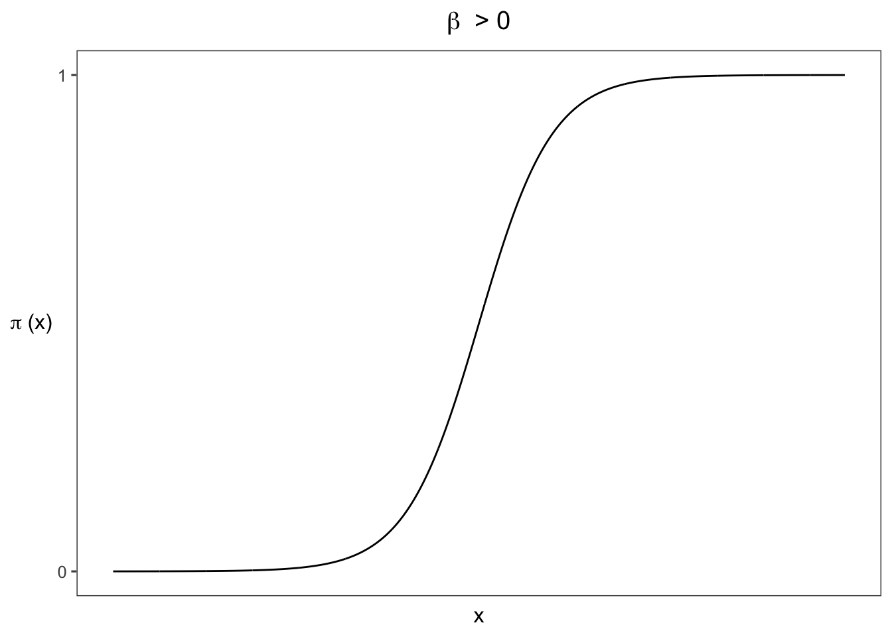
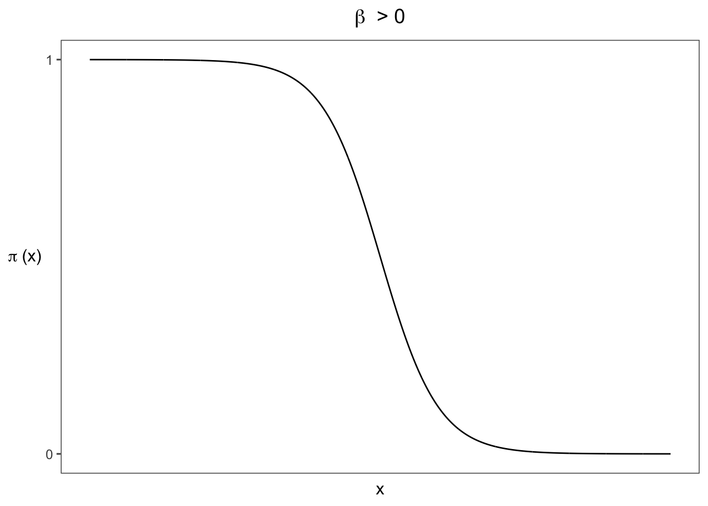
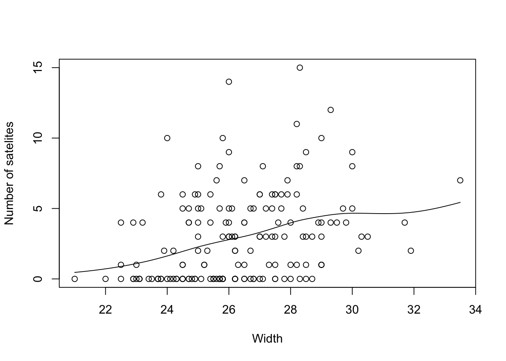
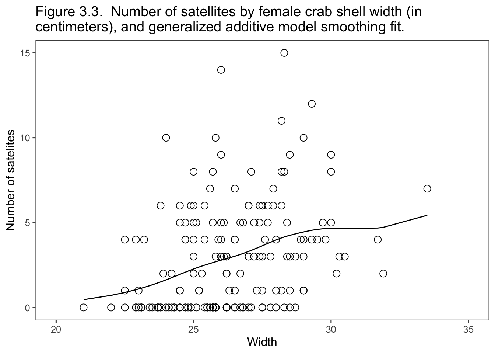
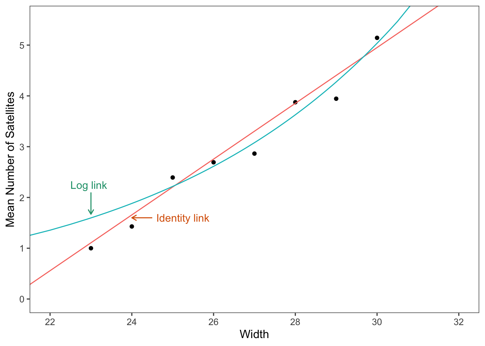
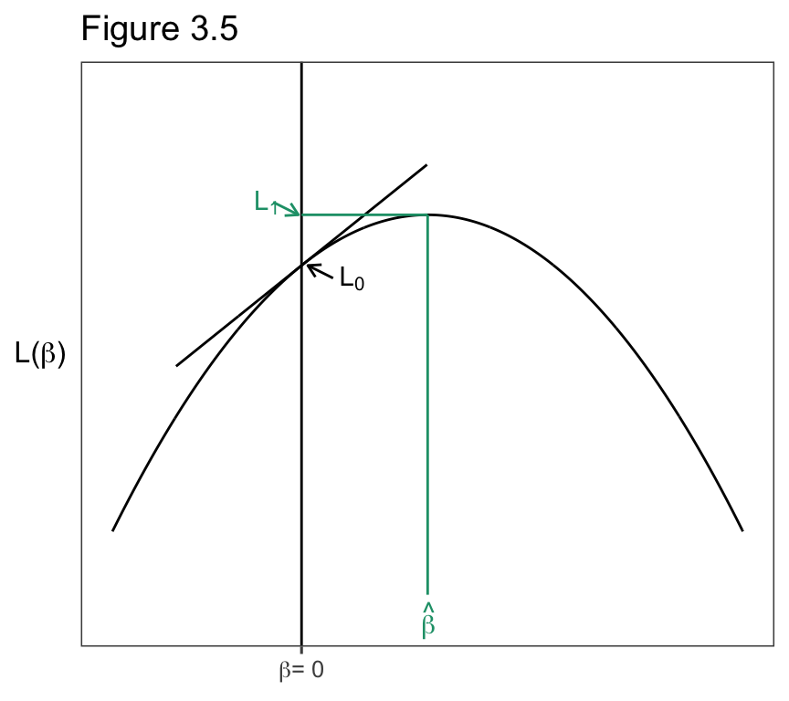

3 Generalized Linear Models
3.1 Components of a Generalized Linear Model
3.1.1 Random Component
3.1.2 Linear Predictor
\[\alpha + \beta_1x_1+ ... + \beta_px_p.\]
3.1.3 Link Function
\[g(\mu)=\alpha + \beta_1x_1+ ... + \beta_px_p.\]
\[\mu=\alpha + \beta_1x_1+ ... + \beta_px_p.\]
\[log(\mu)=\alpha + \beta_1x_1+ ... + \beta_px_p.\]
3.1.4 Ordinary Linear Model: GLM with Normal Random Component
3.2 Components of a Generalized Linear Model
3.2.1 Linear Probability Model
\[ P(Y=1) = \alpha + \beta_1x_1 + ... + \beta_px_p.\]
3.2.2 Logistic Regression Model

\[\begin{equation} P(Y=1) = \frac{exp(\alpha + \beta x)}{exp(1+\alpha + \beta x}=\frac{e^{\alpha + \beta x}}{1 + e^{\alpha + \beta x}}, \tag{3} \end{equation}\]
\[\mathrm{log}\left[\frac{P(Y=1)}{1-P(Y=1)}\right] = \alpha + \beta_1x_1 + ... + \beta_px_p.\]
3.2.3 Example Snoring and Heart Disease
snore <- matrix(c(24, 1355, 35, 603, 21, 192, 30, 224), ncol = 2, byrow = TRUE)
`Table 3.1` <-
bind_cols(Snoring = c("Never", "Occasionaly", "Nearly every night",
"Every night"),
as.data.frame(snore)) %>%
rename("Yes" = V1, "No" = V2) %>%
mutate(Proportion = round(Yes / (Yes + No), 3)) %>%
bind_cols(`Linear Fit` = c(0.017, 0.057,0.096,0.116),
`Logistic Fit` = c(0.021, 0.044,0.093,0.132))
knitr::kable(`Table 3.1`)| Snoring | Yes | No | Proportion | Linear Fit | Logistic Fit |
|---|---|---|---|---|---|
| Never | 24 | 1355 | 0.017 | 0.017 | 0.021 |
| Occasionaly | 35 | 603 | 0.055 | 0.057 | 0.044 |
| Nearly every night | 21 | 192 | 0.099 | 0.096 | 0.093 |
| Every night | 30 | 224 | 0.118 | 0.116 | 0.132 |
3.2.4 Using R to Fit Generalized Lineare Models for Binary Data
Heart <- read.table("http://users.stat.ufl.edu/~aa/cat/data/Heart.dat",
header = TRUE, stringsAsFactors = FALSE)
knitr::kable(Heart)| snoring | yes | no |
|---|---|---|
| never | 24 | 1355 |
| occasional | 35 | 603 |
| nearly_every_night | 21 | 192 |
| every_night | 30 | 224 |
library(tidyverse)
Heart <- Heart %>%
mutate(snoringNights = recode(snoring, never = 0, occasional = 2,
nearly_every_night = 4, every_night = 5))
n <- Heart$yes + Heart$no
fit <- glm(yes/n ~ snoringNights, family = binomial(link = logit),
weights = n, data = Heart)
summary(fit)
Call:
glm(formula = yes/n ~ snoringNights, family = binomial(link = logit),
data = Heart, weights = n)
Deviance Residuals:
1 2 3 4
-0.8346 1.2521 0.2758 -0.6845
Coefficients:
Estimate Std. Error z value Pr(>|z|)
(Intercept) -3.86625 0.16621 -23.261 < 2e-16 ***
snoringNights 0.39734 0.05001 7.945 1.94e-15 ***
---
Signif. codes: 0 '***' 0.001 '**' 0.01 '*' 0.05 '.' 0.1 ' ' 1
(Dispersion parameter for binomial family taken to be 1)
Null deviance: 65.9045 on 3 degrees of freedom
Residual deviance: 2.8089 on 2 degrees of freedom
AIC: 27.061
Number of Fisher Scoring iterations: 4 1 2 3 4
0.02050742 0.04429511 0.09305411 0.13243885 fit2 <- glm(yes/n ~ snoringNights,
family = quasi(link = identity, variance = "mu(1-mu)"),
weights = n, data = Heart)
summary(fit2)
Call:
glm(formula = yes/n ~ snoringNights, family = quasi(link = identity,
variance = "mu(1-mu)"), data = Heart, weights = n)
Deviance Residuals:
1 2 3 4
0.04478 -0.21322 0.11010 0.09798
Coefficients:
Estimate Std. Error t value Pr(>|t|)
(Intercept) 0.0172467 0.0006402 26.94 0.001375 **
snoringNights 0.0197778 0.0005204 38.01 0.000692 ***
---
Signif. codes: 0 '***' 0.001 '**' 0.01 '*' 0.05 '.' 0.1 ' ' 1
(Dispersion parameter for quasi family taken to be 0.03441852)
Null deviance: 65.904481 on 3 degrees of freedom
Residual deviance: 0.069191 on 2 degrees of freedom
AIC: NA
Number of Fisher Scoring iterations: 33.2.5 Data Files: Ungrouped or Grouped Binary Data
Heart2 <- read.table("http://users.stat.ufl.edu/~aa/cat/data/Heart2.dat",
header = TRUE, stringsAsFactors = FALSE) %>%
mutate(snoringNights = recode(snoring, never = 0, occas = 2,
nearly = 4, every = 5))
Heart2 %>%
filter(row_number() %in% c(1, 2, n())) subject snoring x y snoringNights
1 1 never 0 1 0
2 2 never 0 1 0
3 2484 every 5 0 5
Call:
glm(formula = y ~ snoringNights, family = binomial(link = logit),
data = Heart2)
Deviance Residuals:
Min 1Q Median 3Q Max
-0.5331 -0.3010 -0.2036 -0.2036 2.7882
Coefficients:
Estimate Std. Error z value Pr(>|z|)
(Intercept) -3.86625 0.16621 -23.261 < 2e-16 ***
snoringNights 0.39734 0.05001 7.945 1.94e-15 ***
---
Signif. codes: 0 '***' 0.001 '**' 0.01 '*' 0.05 '.' 0.1 ' ' 1
(Dispersion parameter for binomial family taken to be 1)
Null deviance: 900.83 on 2483 degrees of freedom
Residual deviance: 837.73 on 2482 degrees of freedom
AIC: 841.73
Number of Fisher Scoring iterations: 63.3 Generalized Linear Models for Binary Data
3.3.1 Poisson Distribution for Counts
\[E(Y) = \mathrm{var}(Y)= \mu,\ \ \ \sigma(Y)=\sqrt{\mu}.\]
3.3.2 Poisson Loglinear Model
\[\mathrm{log}\ \mu = \alpha + \beta x.\] \[\begin{equation} \mu = \mathrm{exp}(\alpha+\beta x) = e^\alpha(e^\beta)^x. \tag{4} \end{equation}\]
3.3.3 Example: Female Horseshoe Crabs and their Satellites
Crabs <- read.table("http://users.stat.ufl.edu/~aa/cat/data/Crabs.dat",
header = TRUE, stringsAsFactors = FALSE) %>%
tibble() %>%
select(color, spine, width, weight, sat)
Crabs %>%
rename("C" = color, "S"=spine, "Wi"=width, "Wt"=weight, "Sa"=sat) %>%
slice_head(n=6) %>%
knitr::kable() | C | S | Wi | Wt | Sa |
|---|---|---|---|---|
| 2 | 3 | 28.3 | 3.05 | 8 |
| 3 | 3 | 22.5 | 1.55 | 0 |
| 1 | 1 | 26.0 | 2.30 | 9 |
| 3 | 3 | 24.8 | 2.10 | 0 |
| 3 | 3 | 26.0 | 2.60 | 4 |
| 2 | 3 | 23.8 | 2.10 | 0 |
Call:
glm(formula = sat ~ width, family = poisson(link = log), data = Crabs)
Deviance Residuals:
Min 1Q Median 3Q Max
-2.8526 -1.9884 -0.4933 1.0970 4.9221
Coefficients:
Estimate Std. Error z value Pr(>|z|)
(Intercept) -3.30476 0.54224 -6.095 1.1e-09 ***
width 0.16405 0.01997 8.216 < 2e-16 ***
---
Signif. codes: 0 '***' 0.001 '**' 0.01 '*' 0.05 '.' 0.1 ' ' 1
(Dispersion parameter for poisson family taken to be 1)
Null deviance: 632.79 on 172 degrees of freedom
Residual deviance: 567.88 on 171 degrees of freedom
AIC: 927.18
Number of Fisher Scoring iterations: 6suppressPackageStartupMessages(library(gam))
suppressWarnings(
gam.fit <- gam(sat ~ s(width), family = poisson, data = Crabs)
)
plot(sat ~ width, xlab = "Width", ylab = "Number of satelites", data = Crabs)
curve(predict(gam.fit, data.frame(width = x), type = "resp"), add = TRUE)
Crabs$gamPrediction <- predict(gam.fit, type = "resp")
# https://stackoverflow.com/questions/2631780/r-ggplot2-can-i-set-the-plot-title-to-wrap-around-and-shrink-the-text-to-fit-t
wrapper <- function(x, ...) {paste(strwrap(x, ...), collapse = "\n")}
library(ggthemes)
Crabs %>%
ggplot(aes(x = width, y = sat)) +
geom_point(shape = 1, size = 3) +
geom_line(aes(y=gamPrediction)) +
xlim(c(20, 35))+
theme_few() +
xlab("Width") +
ylab("Number of satelites") +
ggtitle(wrapper("Figure 3.3. Number of satellites by female crab shell width (in centimeters), and generalized additive model smoothing fit.", 70))
\[\hat\mu =\mathrm{exp}(\hat\alpha + \hat\beta x)= \mathrm{exp}[-3.305 + 0.164(26.3)]=2.74.\]
identityGLM <- glm(sat ~ width,
family = poisson(link="identity"),
start=c(0.5,0.5),
data = Crabs)
logitGLM <- glm(sat ~ width, family = poisson(link="log"), data = Crabs)
Crabs2 <- bind_cols(Crabs,
"identity" = fitted(identityGLM),
"logit" = fitted(logitGLM))
library(RColorBrewer)
colors <- brewer.pal(n = 4, name = "Dark2")
CrabBin <- Crabs2 %>%
mutate(bin = case_when(width <= 23.25 ~ 23,
width > 23.25 & width <= 24.25 ~ 24,
width > 24.25 & width <= 25.25 ~ 25,
width > 25.25 & width <= 26.25 ~ 26,
width > 26.25 & width <= 27.25 ~ 27,
width > 27.25 & width <= 28.25 ~ 28,
width > 28.25 & width <= 29.25 ~ 29,
width > 29.25 ~ 30)) %>%
group_by(bin) %>%
summarize(Mean = mean(sat, na.rm=TRUE), .groups = "drop")
library(ggthemes)
ggplot() +
geom_point(data = CrabBin, aes(x=bin, y = Mean)) +
geom_line(data = Crabs2, aes(x=width, y = identity, color = colors[1])) +
geom_line(data = Crabs2, aes(x=width, y = logit, color = colors[2])) +
coord_cartesian(ylim = c(0, 5.5), xlim = c(22, 32)) +
scale_y_continuous(breaks=seq(0, 5)) +
scale_x_continuous(breaks=seq(22, 32, by = 2)) +
theme_few() +
annotate(geom = "segment", x = 23, y = 2.1, xend = 23, yend = 1.67,
arrow = arrow(length = unit(2, "mm")) , color = colors[1]) +
annotate(geom = "text", x = 22.5, y = 2.25, label = "Log link",
hjust = "left", color = colors[1]) +
annotate(geom = "segment", x = 24.5, y = 1.6, xend = 24, yend = 1.6,
arrow = arrow(length = unit(2, "mm")), color = colors[2]) +
annotate(geom = "text", x = 24.6, y = 1.6, label = "Identity link",
hjust = "left", color = colors[2]) +
theme(legend.position = "none") +
xlab("Width") +
ylab("Mean Number of Satellites") 
3.3.4 Overdispersion: Greater Variability than Expected
3.4 Generalized Lineaer Models for Counts and Rates
3.4.1 Wald, Likelihood-Ratio, and Score Inference Use the Likelihood Function
\[z = \hat\beta /SE,\]
\[2\ \mathrm{log}(\ell_1/\ell_0) = 2[\mathrm{log}(\ell_1) - \mathrm{log}(\ell_0)] = 2(L_1-L_0),\].
# https://stackoverflow.com/questions/29642867/drawing-a-tangent-to-the-plot-and-finding-the-x-intercept-using-r
x = seq(-3.0, 7, by = .01)
df <- tibble(x = x) %>%
mutate(y = 10 - (x-2)^2 )
spl <- smooth.spline(df$x, df$y, spar=0.3)
newx <- seq(min(df$x), max(df$x), 0.1)
pred <- predict(spl, x=newx, deriv=0)
# solve for tangent at a given x
newx <- 0
pred0 <- predict(spl, x=newx, deriv=0)
pred1 <- predict(spl, x=newx, deriv=1)
yint <- pred0$y - (pred1$y*newx)
xint <- -yint/pred1$y
tang <- tibble(x = df$x) %>%
mutate(y = yint + pred1$y*x) %>%
filter(x > -2.0 & x < 2)
library(RColorBrewer)
colors <- brewer.pal(n = 4, name = "Dark2")
library(ggthemes)
ggplot() +
geom_line(data = df, aes(x = x, y = y)) +
geom_line(data = tang, aes(x= x, y = y)) +
geom_vline(xintercept = 0) +
ylim(-22,20) +
annotate(geom = "segment", x = 2, y = 10, xend = 2, yend = -20, color = colors[1]) +
annotate(geom = "segment", x = 2, y = 10, xend = 0, yend = 10, color = colors[1]) +
annotate(geom = "text", x = 1.9, y = -22 , label = "hat(beta)", parse = TRUE,
hjust = "left", color = colors[1]) +
annotate(geom = "text", x = -.75, y = 11, label = "L[1]", parse = TRUE,
hjust = "left", color = colors[1]) +
annotate(geom = "segment", x = -.45, y = 11, xend = -.05, yend = 10,
arrow = arrow(length = unit(2, "mm")), color = colors[1]) +
annotate(geom = "text", x = .6, y = 5 , label = "L[0]", parse = TRUE,
hjust = "left") +
annotate(geom = "segment", x = .5, y = 5, xend = 0.1, yend = 6,
arrow = arrow(length = unit(2, "mm"))) +
theme_few() +
ylab (expression(paste("L(" , beta, ")"))) +
theme(axis.title.x=element_blank(),
axis.text.y=element_blank(),
axis.ticks.y=element_blank(),
axis.title.y = element_text(angle = 0, vjust = .5)) +
scale_x_continuous(breaks = c(0), label = c(expression(paste( beta, "= 0")))) +
ggtitle("Figure 3.5")
3.4.2 Example Political Ideology and Belief in Evolution
Evo <- read.table("http://users.stat.ufl.edu/~aa/cat/data/Evolution.dat",
header = TRUE, stringsAsFactors = FALSE)
n <- Evo$true + Evo$false
# gives a Wald z
fit <- glm(true/n ~ ideology, family = binomial, weights = n, data = Evo)
summary(fit)
Call:
glm(formula = true/n ~ ideology, family = binomial, data = Evo,
weights = n)
Deviance Residuals:
1 2 3 4 5 6 7
0.1430 -0.2697 1.4614 -1.0791 0.2922 0.4471 0.2035
Coefficients:
Estimate Std. Error z value Pr(>|z|)
(Intercept) -1.75658 0.20500 -8.569 <2e-16 ***
ideology 0.49422 0.05092 9.706 <2e-16 ***
---
Signif. codes: 0 '***' 0.001 '**' 0.01 '*' 0.05 '.' 0.1 ' ' 1
(Dispersion parameter for binomial family taken to be 1)
Null deviance: 113.20 on 6 degrees of freedom
Residual deviance: 3.72 on 5 degrees of freedom
AIC: 42.332
Number of Fisher Scoring iterations: 3[1] 0.5903905# Function to get the 95% Wald confidence interval.
waldCI <- function(x){
list(lower = summary(x)$coefficients[, 1] + summary(x)$coefficients[, 2] *
qnorm(.025,lower.tail=TRUE),
upper = summary(x)$coefficients[, 1] + summary(x)$coefficients[, 2] *
qnorm(.025,lower.tail=FALSE))
}
waldCI(fit) # Wald CI$lower
(Intercept) ideology
-2.1583654 0.3944219
$upper
(Intercept) ideology
-1.3547930 0.5940161 Waiting for profiling to be done... 2.5 % 97.5 %
(Intercept) -2.165294 -1.3609733
ideology 0.396166 0.5959414Loading required package: carData
Attaching package: 'carData'The following object is masked from 'package:vcdExtra':
BurtAnalysis of Deviance Table (Type II tests)
Response: true/n
LR Chisq Df Pr(>Chisq)
ideology 109.48 1 < 2.2e-16 ***
---
Signif. codes: 0 '***' 0.001 '**' 0.01 '*' 0.05 '.' 0.1 ' ' 1 # can also get with drop1(fit, test = "LRT")
library(statmod) # for glm.scoretest
# null model
fit0 <- glm(true/n ~ 1, family = binomial, weights = n, data = Evo)
glm.scoretest(fit0, Evo$ideology)^2 # score statistic with df = 1[1] 104.101\[\mathrm{Deviance}=2(L_S-L_M).\]
[1] 4.353897e-22[1] 0.59039053.4.4 Model Comparison Using the Deviance
\[2(L_1-L_0)=2(L_S-L_0)-2(L_S-L1)= \mathrm{Deviance}_0 - \mathrm{Deviance}_1,\]
3.4.5 Residuals Comparing Ovservations to the Model Fit
\[\begin{equation} \mathrm{Pearson\ residual} = e_i =\frac{y_i-\hat\mu_i}{\sqrt{\widehat{var}(y_i)}} \tag{5} \end{equation}\]
\[\mathrm{Standardized\ residual} = e_i =\frac{y_i-\hat\mu_i}{SE}.\]
Evo %>%
bind_cols(`# sample` = .$true/n, # .$ needed to use existing column
`fitted` = fitted(fit),
`std. res.` = rstandard(fit, type = "pearson")) ideology true false # sample fitted std. res.
1 1 11 37 0.2291667 0.2205679 0.1611162
2 2 46 104 0.3066667 0.3168813 -0.3515386
3 3 70 72 0.4929577 0.4319445 1.6480176
4 4 241 214 0.5296703 0.5548525 -1.4995488
5 5 78 36 0.6842105 0.6713982 0.3248519
6 6 89 24 0.7876106 0.7700750 0.5413625
7 7 36 6 0.8571429 0.8459201 0.22066053.5 Fitting Generalized Linear Models
3.5.1 The Fisher Scoring Algorithm Fits GLMs
3.5.2 Bayesian Methods for Generalized Lineare Models
3.5.3 GLMs: A Unified Approach to Statistical Analysis
| Random Component | Link Function | Explanatory Variables | Model | Chapter |
|---|---|---|---|---|
| Normal | Identity | Continuous | Regression | |
| Normal | Identity | Categorical | Analysis of variance | |
| Normal | Identity | Mixed | Analysis of covariance | |
| Binomial | Logit | Mixed | Logistic regression | 4-5, 8-10 |
| Multinomial | Logit | Mixed | Multinomial logit | 8, 8-10 |
| Poison | Log | Mixed | Loglinear | 7 |